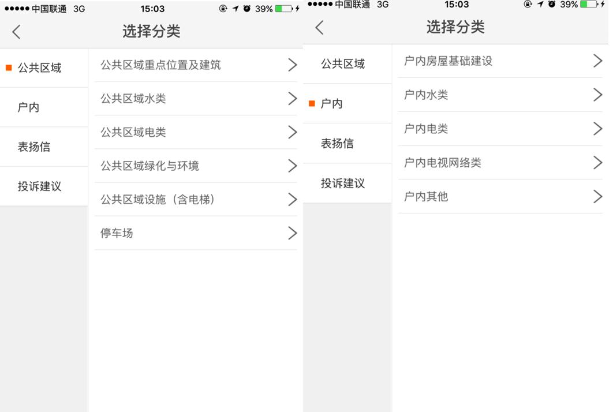

发布时间：2016-08-03 来源： 阅读量： 281
1、业主以前向物业公司反映问题后，有可能得不到及时的反映。需要重复使用电话或前往物业服务中心再次报修；
2、业主在园区行走或上下班路上发现一些想报修到物业的可能不能及时联系物业而遗忘；
3、报修后可能由于业主描述不清，致使报修实际情况无法真实反馈至物业，以影响到报修的后续跟进服务反馈。
1、app线上报修、一键完成；
2、报修评价系统上线，对报修师傅服务满意与否你说了算；
3、报修描述支持照片上传，图片+文字形式描述让物业人员更加清晰了解报修情况；
4、重大事件投诉，专业客服进行服务回访，全程跟进服务质量。
1、项目通过前期在社区活动预告、口头传播、张贴海报、拜访易拉宝、微信推文、亿街区PUSH通知等传播方式让业主知道亿街区线上报修的渠道， 对电话报修的用户告知下次可通过亿街区线上报修更加高效、便捷；

2、对于重大投诉事件、表扬事件， 400客服中心协助进行了筛选并告知物业相关负责人及时跟进处理，了解投诉事件的处理进度，维修完成后做好闭环工作；
3、物业人员在向业主推荐亿街区时，主推功能为线上报修，因为线上报修的便利性省去了业主每次需要重复致电到物业公司的麻烦，或遇电话繁忙以无法及时报修；
4、管家无需担心业主报修后自己不知道的情况，亿街区可以配置邮件通知功能，让管家第一时间得知物业报修信息。
北京远洋山水家园每日报修量单日报修超过50条、24小时内报修完成45条，2016年03月01日-07月06日，报修总单量4390单，完成单数4170单，完成率95%。
1、项目客服人员通过扫二维码推荐及口头传播方式向业主推荐使用线上报修功能，通过来电报修的订单会同步录入到亿街区上，以方便后续的跟进回访工作；
2、业主通过亿街区报修对物业服务工作进行点评，有利于提升业主对物业的服务满意度；
3、通过亿街区的报修可以及时在手机端查看，提升了物业跟进报修服务的效率。